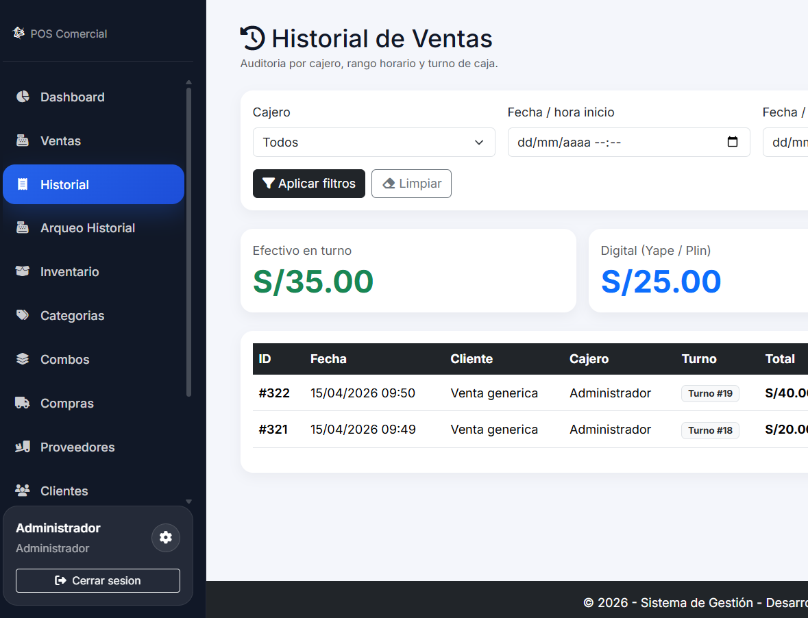
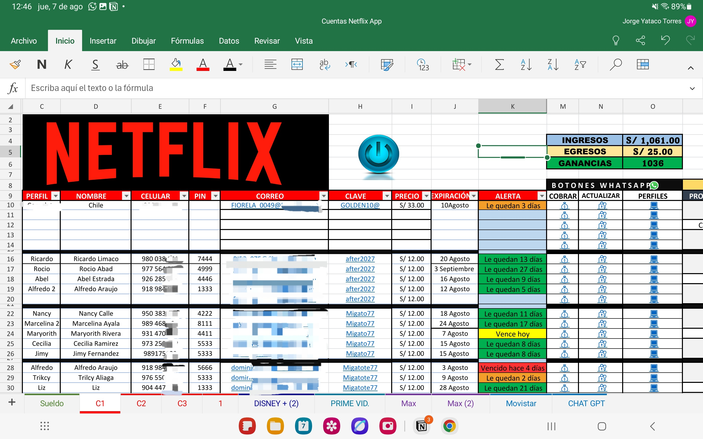
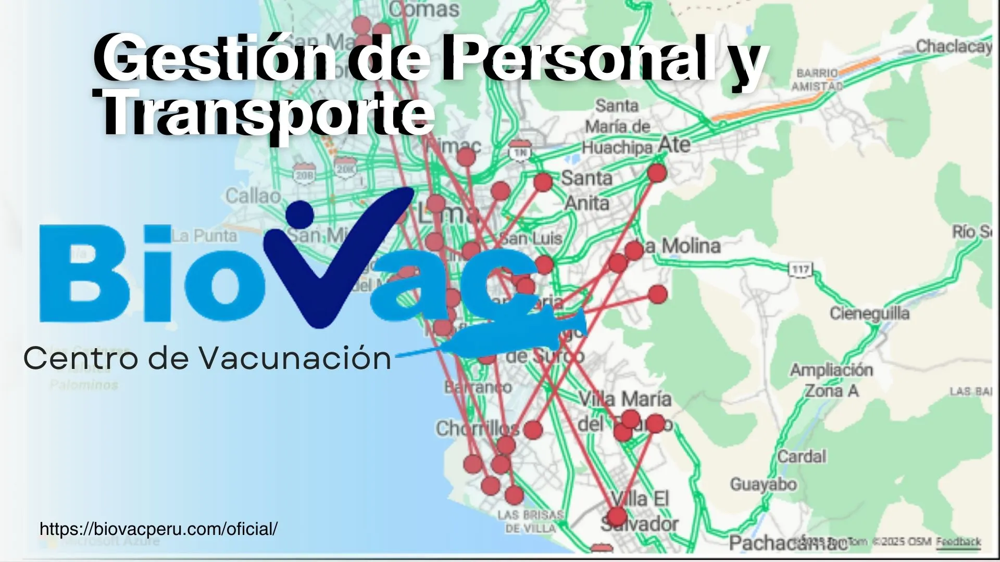
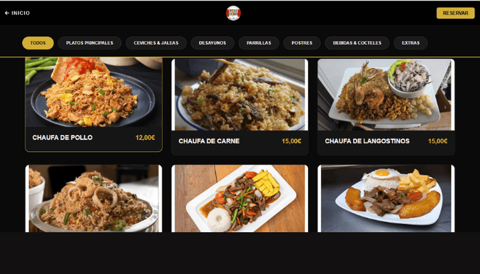
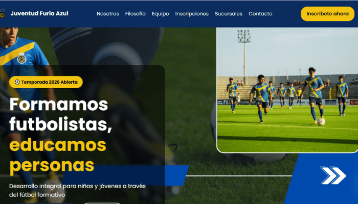
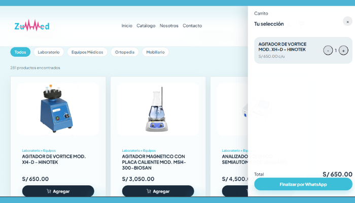

Sistema de Ventas e Inventario
Solución integral para el control de stock, gestión de ventas en tiempo real y reportes administrativos automatizados.
Ver códigoAnalista de Datos | Business Intelligence | Ingeniería de Sistemas
Especializado en convertir información compleja en insights accionables y crear experiencias digitales que impulsan el crecimiento empresarial.
Soy Jorge Yataco Torres, especialista en Análisis de Datos e Inteligencia de Negocios y Desarrollo de Sistemas Web. Mi trabajo combina dos disciplinas complementarias: transformar datos en decisiones estratégicas y construir los sistemas que generan esos datos, desde la base de datos hasta la interfaz.
A partir de mi experiencia diseñando sistemas POS, e-commerce y plataformas de gestión, domino el flujo completo de un producto digital: modelado de bases de datos relacionales, desarrollo backend y frontend, integración de APIs, y luego el análisis que convierte esa operación en patrones comerciales accionables.
Utilizo un ecosistema sólido compuesto por SQL Server, MySQL y PostgreSQL para el modelado y consultas avanzadas, Python (Pandas, NumPy) para automatización y ETL, Power BI para dashboards interactivos, y JavaScript, React, Node.js y PHP para construir los sistemas web que dan soporte a todo ese flujo, apoyándome en inteligencia artificial para acelerar tanto el desarrollo como la generación de insights.
Mi enfoque está en cerrar la brecha entre construir y entender: desarrollo sistemas robustos y luego traduzco sus métricas en historias visuales claras que impulsan el crecimiento real del negocio, optimizando operaciones, detectando cuellos de botella y maximizando la rentabilidad.
Diseñar modelos de datos eficientes y dashboards analíticos intuitivos que conecten la infraestructura técnica con los objetivos comerciales de la empresa.
Consolidarme como Analista de Datos aportando un perfil técnico y de ingeniería capaz de automatizar flujos de trabajo y resolver problemas de negocio complejos.
Dominio de tecnologías y herramientas para crear soluciones efectivas y escalables
 Bootstrap 5
95%
Bootstrap 5
95%
Soluciones reales enfocadas en análisis de datos y desarrollo web.

Solución integral para el control de stock, gestión de ventas en tiempo real y reportes administrativos automatizados.
Ver código
Análisis comercial con KPIs clave para la toma de decisiones estratégicas.
Ver proyecto
Monitoreo de transportes y gestión de vacunación-Clinica de Vacunación.
Ver ProyectoPlataforma moderna optimizada para escalabilidad y experiencia de usuario.
Ver código
Plataforma web gastronómica dedicada a la promoción de la culinaria peruana, con una interfaz visualmente atractiva y optimizada.
Ver sitio web
Sitio web institucional para club deportivo, enfocado en la gestión de identidad visual, noticias y presencia digital del equipo.

Sitio web corporativo diseñado para un distribuidor de equipos médicos, con enfoque en la gestión de catálogo de productos, confianza visual y adaptabilidad en todos los dispositivos.
Respaldos académicos y de formación profesional
Institución
¿Tienes un proyecto, una propuesta laboral o necesitas apoyo
en análisis de datos, dashboards o desarrollo web?
Completa el formulario y me pondré en contacto contigo.